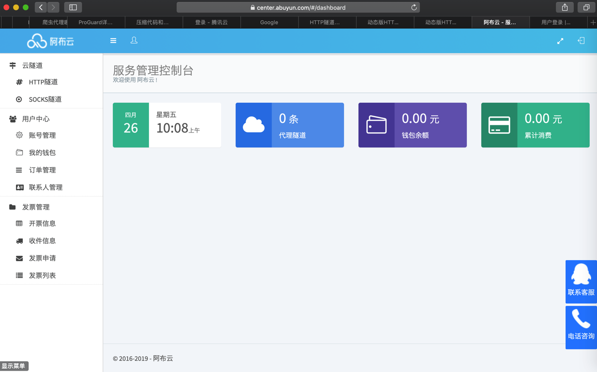
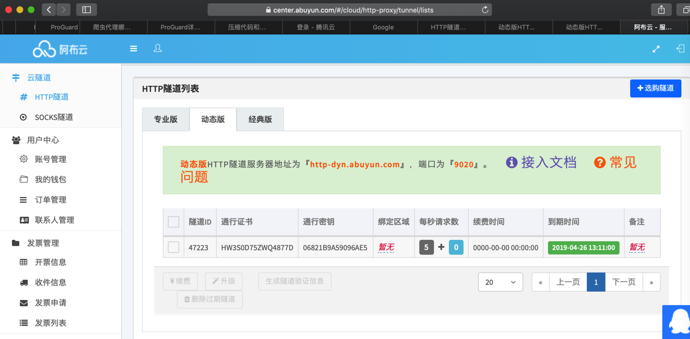
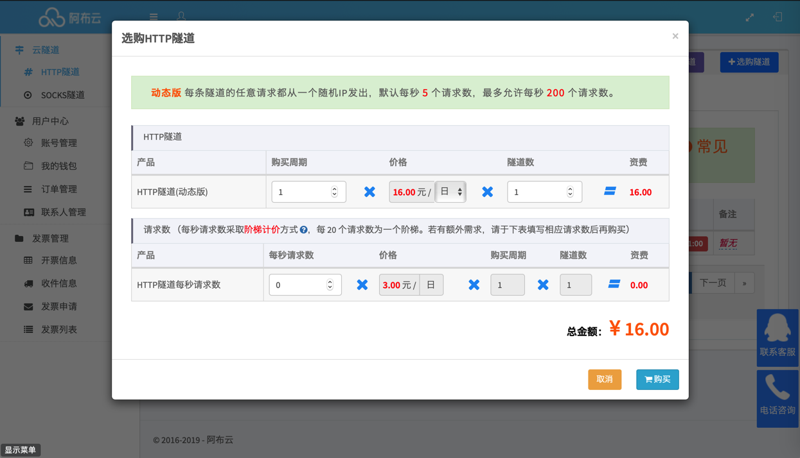
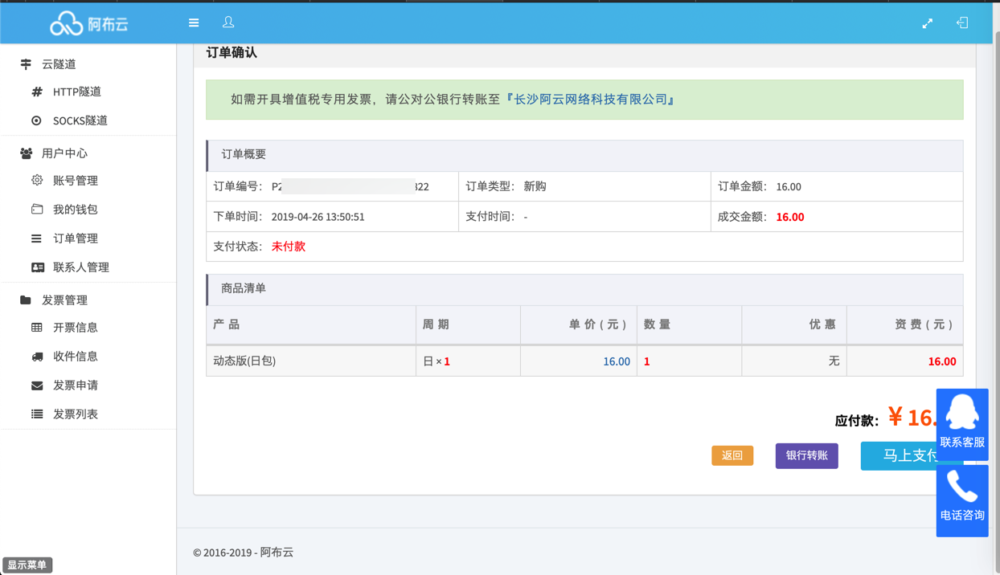
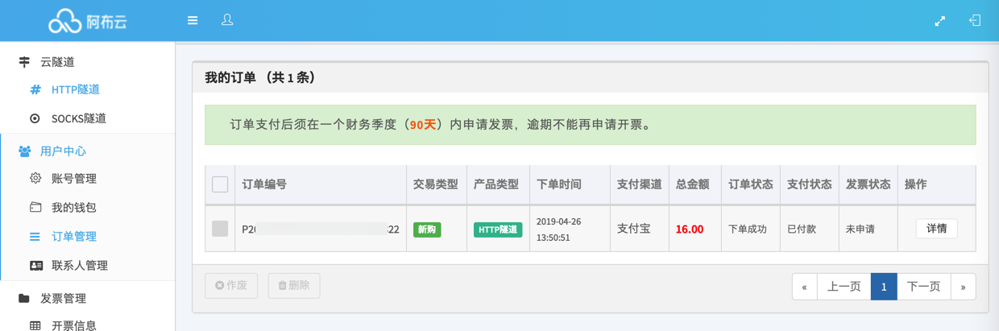
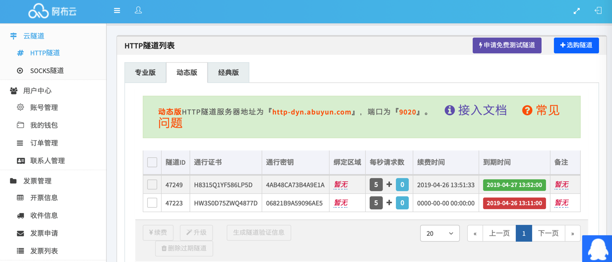

阿布云代理
之前自己为了反扒，去买了阿布云的代理，实现了每次请求IP都不同的动态IP的效果，效果还不错。
- 阿布云代理
- 主页
购买阿布云的HTTP隧道代理
购买 HTTP隧道 动态版
- 服务说明
- 接入指南

点击了 申请免费测试隧道 后：

即可申请到 免费测试时间：4个小时 的动态IP。
经过测试无误后，即可后续继续购买。
比如 购买1天的：


跳转到支付宝付款，成功付款后返回订单列表：

进入云隧道->HTTP代理，可看到已购产品列表：

得到了通行证书和通行密钥，就是用户名和密码，即可放在代码中使用。
账号过期
如果后续所购服务过期了仍继续调用接口，则会报错HTTP 402: Payment Required。
比如PySpider中的报错：
[W 190502 10:04:59 tornado_fetcher:423] [402] DianpingChildrenEnglish:03d7573282446a107bf426f38e30f406 http://www.dianping.com/shop/98532606#221048_745240 0.06s
[E 190502 10:04:59 processor:202] process DianpingChildrenEnglish:03d7573282446a107bf426f38e30f406 http://www.dianping.com/shop/98532606#221048_745240 -> [402] len:312 -> result:None fol:0 msg:0 err:HTTPError('HTTP 402: Payment Required',)
解决办法：重新续费，或者购买新服务，再去代码中换上新的通行证书和通行密钥，即可。